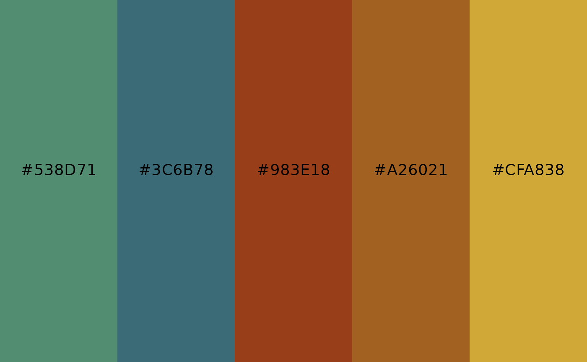
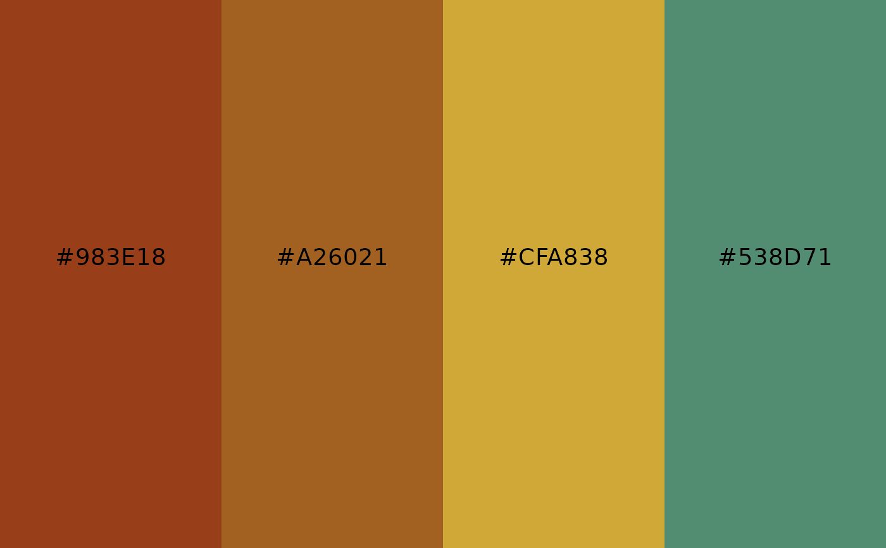
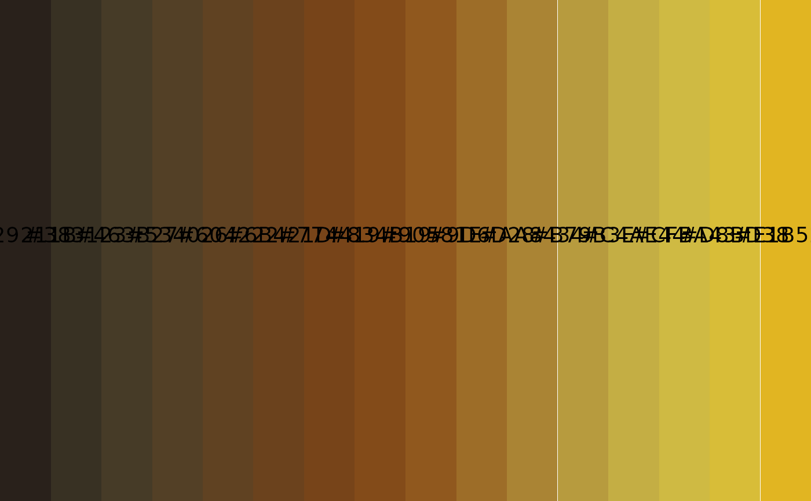

Visualize colors and print hexcodes from a poison frog color palette.
Arguments
- name
Character. Name of poison frog palette (one of
poison_palettes_names()).- n
Integer (optional). Number of colours to use. Defaults to the palette length (max. n = 5) for
type = "discrete"and 256 fortype = "continuous".- type
Either
"discrete"or"continuous".- direction
Integer.
1for forward,-1for reversed order.- alpha
Optional numeric in
[0, 1]. Uniform transparency applied to all colours.- return
Either
"plot"(default) to show a tile plot with hex labels, or"vector"to return a character vector of hex colours.
Value
If return = "plot", a ggplot2 object. If return = "vector",
a character vector of hex colours.
Examples
# Show a palette as tiles (default)
poison_palette("Ramazonica")

# Reverse order and show only 4 colours
poison_palette("Ramazonica", n = 4, direction = -1)

# Get a vector with the palette hex codes
cols <- poison_palette("Ramazonica", return = "vector")
# Continuous gradient preview (16 swatches)
poison_palette("Osotokiki", type = "continuous", n = 16)
